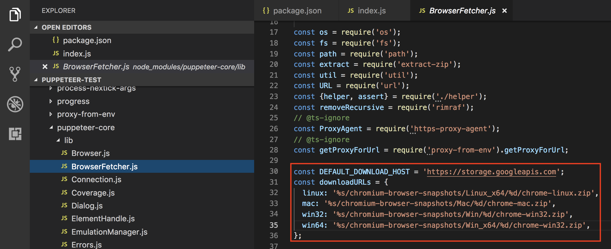
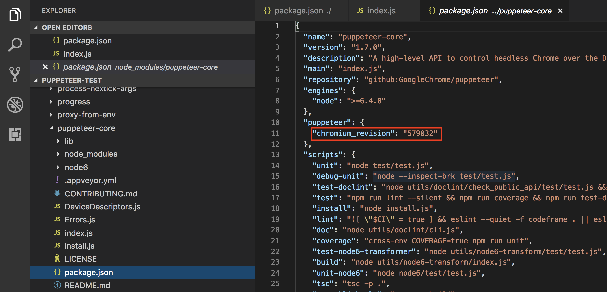
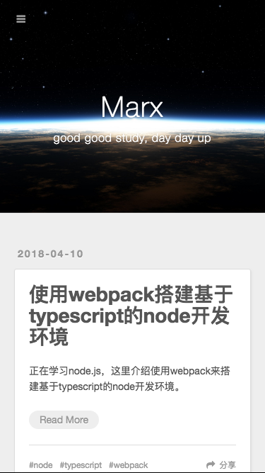

<!DOCTYPE html>
<html>
<head><meta name="generator" content="Hexo 3.9.0">
  <meta charset="utf-8">
  <link rel="manifest" href="manifest.json">
  
  <title>手动下载 Chrome，解决 puppeteer 无法使用问题 | Hello, I am Marx</title>
  <meta name="baidu-site-verification" content="fwLK28VV6P">
  <meta name="viewport" content="width=device-width, initial-scale=1, maximum-scale=1">
  <meta name="description" content="因为网络原因，国内安装 puppeteer 的时候会报网络超时。这里使用 puppeteer-core 之后使用手动下载的 Chrome 进行操作。思路很简单，安装一个不带浏览器的 puppeteer，再使用的时候将浏览器地址指向一个可执行的 Chrome 浏览器文件。">
<meta property="og:type" content="article">
<meta property="og:title" content="手动下载 Chrome，解决 puppeteer 无法使用问题">
<meta property="og:url" content="https://marxjiao.com/2018/08/26/puppeteer-install/index.html">
<meta property="og:site_name" content="Hello, I am Marx">
<meta property="og:description" content="因为网络原因，国内安装 puppeteer 的时候会报网络超时。这里使用 puppeteer-core 之后使用手动下载的 Chrome 进行操作。思路很简单，安装一个不带浏览器的 puppeteer，再使用的时候将浏览器地址指向一个可执行的 Chrome 浏览器文件。">
<meta property="og:locale" content="zh-CN">
<meta property="og:image" content="https://marxjiao.com/2018/08/26/puppeteer-install/url.png">
<meta property="og:image" content="https://marxjiao.com/2018/08/26/puppeteer-install/revision.png">
<meta property="og:image" content="https://marxjiao.com/2018/08/26/puppeteer-install/marx-blog.png">
<meta property="og:updated_time" content="2020-08-04T09:34:02.379Z">
<meta name="twitter:card" content="summary">
<meta name="twitter:title" content="手动下载 Chrome，解决 puppeteer 无法使用问题">
<meta name="twitter:description" content="因为网络原因，国内安装 puppeteer 的时候会报网络超时。这里使用 puppeteer-core 之后使用手动下载的 Chrome 进行操作。思路很简单，安装一个不带浏览器的 puppeteer，再使用的时候将浏览器地址指向一个可执行的 Chrome 浏览器文件。">
<meta name="twitter:image" content="https://marxjiao.com/2018/08/26/puppeteer-install/url.png">
  
  
    <link rel="icon" href="/favicon.png">
  
  
    <link href="//fonts.googleapis.com/css?family=Source+Code+Pro" rel="stylesheet" type="text/css">
  
  <link rel="stylesheet" href="/css/style.css">
  

  <script>
  var _hmt = _hmt || [];
  (function() {
    var hm = document.createElement("script");
    hm.src = "https://hm.baidu.com/hm.js?f2aece70f9b4d1eb644623e3ddf0dfe1";
    var s = document.getElementsByTagName("script")[0]; 
    s.parentNode.insertBefore(hm, s);
  })();
  </script>
  </head></html>
<body>
  <div id="container">
    <div id="wrap">
      <header id="header">
  <div id="banner"></div>
  <div id="header-outer" class="outer">
    <div id="header-title" class="inner">
      <h1 id="logo-wrap">
        <a href="/" id="logo">Hello, I am Marx</a>
      </h1>
      
        <h2 id="subtitle-wrap">
          <a href="/" id="subtitle">Technology is to the left, art is to the right. But unfortunately I can not divide them.</a>
        </h2>
      
    </div>
    <div id="header-inner" class="inner">
      <nav id="main-nav">
        <a id="main-nav-toggle" class="nav-icon"></a>
        
          <a class="main-nav-link" href="/">Home</a>
        
          <a class="main-nav-link" href="/archives">Archives</a>
        
          <a class="main-nav-link" href="/projects">Projects</a>
        
      </nav>
      <nav id="sub-nav">
        
        
      </nav>
      
    </div>
  </div>
</header>
      <div class="outer">
        <section id="main"><article id="post-puppeteer-install" class="article article-type-post" itemscope itemprop="blogPost">
  <div class="article-meta">
    <a href="/2018/08/26/puppeteer-install/" class="article-date">
  <time datetime="2018-08-26T13:45:19.000Z" itemprop="datePublished">2018-08-26</time>
</a>
    
  </div>
  <div class="article-inner">
    
    
      <header class="article-header">
        
  
    <h1 class="article-title" itemprop="name">
      手动下载 Chrome，解决 puppeteer 无法使用问题
    </h1>
  

      </header>
    
    <div class="article-entry" itemprop="articleBody">
      
        <p>因为网络原因，国内安装 <code>puppeteer</code> 的时候会报网络超时。这里使用 <code>puppeteer-core</code> 之后使用手动下载的 <code>Chrome</code> 进行操作。思路很简单，安装一个不带浏览器的 <code>puppeteer</code>，再使用的时候将浏览器地址指向一个可执行的 <code>Chrome</code> 浏览器文件。</p>
<a id="more"></a>

<h2 id="安装"><a href="#安装" class="headerlink" title="安装"></a>安装</h2><p>安装<code>puppeteer-core</code>。</p>
<figure class="highlight plain"><table><tr><td class="gutter"><pre><span class="line">1</span><br></pre></td><td class="code"><pre><span class="line">yarn add puppeteer-core</span><br></pre></td></tr></table></figure>

<h2 id="找到-puppeteer-中对应的浏览器并下载"><a href="#找到-puppeteer-中对应的浏览器并下载" class="headerlink" title="找到 puppeteer 中对应的浏览器并下载"></a>找到 puppeteer 中对应的浏览器并下载</h2><p>在 <code>node_modules/puppeteer-core/lib/BrowserFetcher.js</code> 中找到各平台 <code>Chrome</code> 下载地址。其中<code>%s</code> 替换为 <code>DEFAULT_DOWNLOAD_HOST</code> 的值，<code>%d</code> 替换为版本号。</p>
<p></p>
<p>在 <code>node_modules/puppeteer-core/packages.json</code> 中找到版本号</p>
<p></p>
<p>替换后得到下载地址</p>
<p><a href="https://storage.googleapis.com/chromium-browser-snapshots/Mac/579032/chrome-mac.zip" target="_blank" rel="noopener">https://storage.googleapis.com/chromium-browser-snapshots/Mac/579032/chrome-mac.zip</a></p>
<p>下载后解压，放在项目目录中，这里我放在 chrome 下。</p>
<h2 id="使用"><a href="#使用" class="headerlink" title="使用"></a>使用</h2><p>这样就可以使用了。</p>
<p>使用代码</p>
<figure class="highlight javascript"><table><tr><td class="gutter"><pre><span class="line">1</span><br><span class="line">2</span><br><span class="line">3</span><br><span class="line">4</span><br><span class="line">5</span><br><span class="line">6</span><br><span class="line">7</span><br><span class="line">8</span><br><span class="line">9</span><br><span class="line">10</span><br><span class="line">11</span><br><span class="line">12</span><br><span class="line">13</span><br><span class="line">14</span><br><span class="line">15</span><br><span class="line">16</span><br><span class="line">17</span><br><span class="line">18</span><br><span class="line">19</span><br><span class="line">20</span><br><span class="line">21</span><br><span class="line">22</span><br><span class="line">23</span><br></pre></td><td class="code"><pre><span class="line"><span class="keyword">const</span> puppeteer = <span class="built_in">require</span>(<span class="string">'puppeteer-core'</span>);</span><br><span class="line"><span class="keyword">const</span> path = <span class="built_in">require</span>(<span class="string">'path'</span>);</span><br><span class="line"></span><br><span class="line">(<span class="keyword">async</span> () =&gt; &#123;</span><br><span class="line">    <span class="keyword">const</span> browser = <span class="keyword">await</span> puppeteer.launch(&#123;</span><br><span class="line">        <span class="comment">// 这里注意路径指向可执行的浏览器。</span></span><br><span class="line">        <span class="comment">// 各平台路径可以在 node_modules/puppeteer-core/lib/BrowserFetcher.js 中找到</span></span><br><span class="line">        <span class="comment">// Mac 为 '下载文件解压路径/Chromium.app/Contents/MacOS/Chromium'</span></span><br><span class="line">        <span class="comment">// Linux 为 '下载文件解压路径/chrome'</span></span><br><span class="line">        <span class="comment">// Windows 为 '下载文件解压路径/chrome.exe'</span></span><br><span class="line">        executablePath: path.resolve(<span class="string">'./chrome/Chromium.app/Contents/MacOS/Chromium'</span>)</span><br><span class="line">    &#125;);</span><br><span class="line">    <span class="keyword">const</span> page = <span class="keyword">await</span> browser.newPage();</span><br><span class="line">    <span class="keyword">await</span> page.setViewport(&#123;</span><br><span class="line">        width: <span class="number">375</span>,</span><br><span class="line">        height: <span class="number">667</span>,</span><br><span class="line">        deviceScaleFactor: <span class="number">1</span>,</span><br><span class="line">        isMobile: <span class="literal">true</span></span><br><span class="line">    &#125;)</span><br><span class="line">    <span class="keyword">await</span> page.goto(<span class="string">'https://marxjiao.com/'</span>);</span><br><span class="line">    <span class="keyword">await</span> page.screenshot(&#123;<span class="attr">path</span>: <span class="string">'marx-blog.png'</span>&#125;);</span><br><span class="line">    <span class="keyword">await</span> browser.close();</span><br><span class="line">&#125;)();</span><br></pre></td></tr></table></figure>

<p>执行文件</p>
<figure class="highlight plain"><table><tr><td class="gutter"><pre><span class="line">1</span><br></pre></td><td class="code"><pre><span class="line">node index.js</span><br></pre></td></tr></table></figure>

<p>执行后可看到，图片已经截图出来了</p>
<p></p>
<p>代码地址： <a href="https://github.com/MarxJiao/puppeteer-test" target="_blank" rel="noopener">https://github.com/MarxJiao/puppeteer-test</a></p>

      
    </div>
    <footer class="article-footer">
      <a data-url="https://marxjiao.com/2018/08/26/puppeteer-install/" data-id="ckdfqxh2s000c2gon7y39qi5u" class="article-share-link">分享</a>
      
      
    </footer>
  </div>
  
    
<nav id="article-nav">
  
    <a href="/2019/04/02/your-beauty-value/" id="article-nav-newer" class="article-nav-link-wrap">
      <strong class="article-nav-caption">上一篇</strong>
      <div class="article-nav-title">
        
          使用小程序云开发和百度云 AI 接口做了一个颜值测量小程序
        
      </div>
    </a>
  
  
    <a href="/2018/04/10/node-webpack/" id="article-nav-older" class="article-nav-link-wrap">
      <strong class="article-nav-caption">下一篇</strong>
      <div class="article-nav-title">使用webpack搭建基于typescript的node开发环境</div>
    </a>
  
</nav>

  
</article>

</section>
        
          <aside id="sidebar">
  
    

  
    
  <div class="widget-wrap">
    <h3 class="widget-title">标签</h3>
    <div class="widget">
      <ul class="tag-list"><li class="tag-list-item"><a class="tag-list-link" href="/tags/Cloud/">Cloud</a></li><li class="tag-list-item"><a class="tag-list-link" href="/tags/Docker/">Docker</a></li><li class="tag-list-item"><a class="tag-list-link" href="/tags/Life/">Life</a></li><li class="tag-list-item"><a class="tag-list-link" href="/tags/angular/">angular</a></li><li class="tag-list-item"><a class="tag-list-link" href="/tags/flex-layout/">flex-layout</a></li><li class="tag-list-item"><a class="tag-list-link" href="/tags/hexo/">hexo</a></li><li class="tag-list-item"><a class="tag-list-link" href="/tags/material/">material</a></li><li class="tag-list-item"><a class="tag-list-link" href="/tags/mock/">mock</a></li><li class="tag-list-item"><a class="tag-list-link" href="/tags/node/">node</a></li><li class="tag-list-item"><a class="tag-list-link" href="/tags/react/">react</a></li><li class="tag-list-item"><a class="tag-list-link" href="/tags/typescript/">typescript</a></li><li class="tag-list-item"><a class="tag-list-link" href="/tags/webpack/">webpack</a></li><li class="tag-list-item"><a class="tag-list-link" href="/tags/webpack-plugin/">webpack plugin</a></li><li class="tag-list-item"><a class="tag-list-link" href="/tags/小程序/">小程序</a></li></ul>
    </div>
  </div>


  
    
  <div class="widget-wrap">
    <h3 class="widget-title">标签云</h3>
    <div class="widget tagcloud">
      <a href="/tags/Cloud/" style="font-size: 10px;">Cloud</a> <a href="/tags/Docker/" style="font-size: 10px;">Docker</a> <a href="/tags/Life/" style="font-size: 10px;">Life</a> <a href="/tags/angular/" style="font-size: 10px;">angular</a> <a href="/tags/flex-layout/" style="font-size: 10px;">flex-layout</a> <a href="/tags/hexo/" style="font-size: 10px;">hexo</a> <a href="/tags/material/" style="font-size: 10px;">material</a> <a href="/tags/mock/" style="font-size: 10px;">mock</a> <a href="/tags/node/" style="font-size: 10px;">node</a> <a href="/tags/react/" style="font-size: 20px;">react</a> <a href="/tags/typescript/" style="font-size: 10px;">typescript</a> <a href="/tags/webpack/" style="font-size: 20px;">webpack</a> <a href="/tags/webpack-plugin/" style="font-size: 10px;">webpack plugin</a> <a href="/tags/小程序/" style="font-size: 10px;">小程序</a>
    </div>
  </div>

  
    
  <div class="widget-wrap">
    <h3 class="widget-title">归档</h3>
    <div class="widget">
      <ul class="archive-list"><li class="archive-list-item"><a class="archive-list-link" href="/archives/2019/11/">十一月 2019</a></li><li class="archive-list-item"><a class="archive-list-link" href="/archives/2019/04/">四月 2019</a></li><li class="archive-list-item"><a class="archive-list-link" href="/archives/2018/08/">八月 2018</a></li><li class="archive-list-item"><a class="archive-list-link" href="/archives/2018/04/">四月 2018</a></li><li class="archive-list-item"><a class="archive-list-link" href="/archives/2018/03/">三月 2018</a></li><li class="archive-list-item"><a class="archive-list-link" href="/archives/2017/12/">十二月 2017</a></li><li class="archive-list-item"><a class="archive-list-link" href="/archives/2017/08/">八月 2017</a></li><li class="archive-list-item"><a class="archive-list-link" href="/archives/2017/06/">六月 2017</a></li><li class="archive-list-item"><a class="archive-list-link" href="/archives/2017/05/">五月 2017</a></li><li class="archive-list-item"><a class="archive-list-link" href="/archives/2017/03/">三月 2017</a></li><li class="archive-list-item"><a class="archive-list-link" href="/archives/2017/02/">二月 2017</a></li><li class="archive-list-item"><a class="archive-list-link" href="/archives/2017/01/">一月 2017</a></li></ul>
    </div>
  </div>


  
    
  <div class="widget-wrap">
    <h3 class="widget-title">最新文章</h3>
    <div class="widget">
      <ul>
        
          <li>
            <a href="/2019/11/03/qnap-docker/">在威联通 NAS 上使用 Docker</a>
          </li>
        
          <li>
            <a href="/2019/04/02/your-beauty-value/">使用小程序云开发和百度云 AI 接口做了一个颜值测量小程序</a>
          </li>
        
          <li>
            <a href="/2018/08/26/puppeteer-install/">手动下载 Chrome，解决 puppeteer 无法使用问题</a>
          </li>
        
          <li>
            <a href="/2018/04/10/node-webpack/">使用webpack搭建基于typescript的node开发环境</a>
          </li>
        
          <li>
            <a href="/2018/03/16/js-extends/">javascript继承方式对比</a>
          </li>
        
      </ul>
    </div>
  </div>

  
</aside>
<!-- ad1 -->
<ins class="adsbygoogle"
style="display:block"
data-ad-client="ca-pub-2718852572240859"
data-ad-slot="4184044363"
data-ad-format="auto"
data-full-width-responsive="true"></ins>
<script>
(adsbygoogle = window.adsbygoogle || []).push({});
</script>
        
      </div>
      <footer id="footer">
  
  <div class="outer">
    <div id="footer-info" class="inner">
      &copy; 2020 Marx<br>
      Powered by <a href="http://hexo.io/" target="_blank">Hexo</a>
    </div>
  </div>
</footer>
    </div>
    <nav id="mobile-nav">
  
    <a href="/" class="mobile-nav-link">Home</a>
  
    <a href="/archives" class="mobile-nav-link">Archives</a>
  
    <a href="/projects" class="mobile-nav-link">Projects</a>
  
</nav>
    

<script src="//ajax.googleapis.com/ajax/libs/jquery/2.0.3/jquery.min.js"></script>


  <link rel="stylesheet" href="/fancybox/jquery.fancybox.css">
  <script src="/fancybox/jquery.fancybox.pack.js"></script>


<script src="/js/script.js"></script>

  </div>
  <script>
  if('serviceWorker' in navigator) {
  navigator.serviceWorker
        .register('/sw.js')
        .then(function() { console.log("Service Worker Registered"); });
  }
  </script>
</body>
</html>